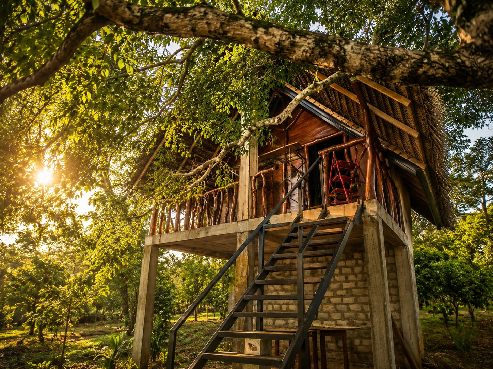
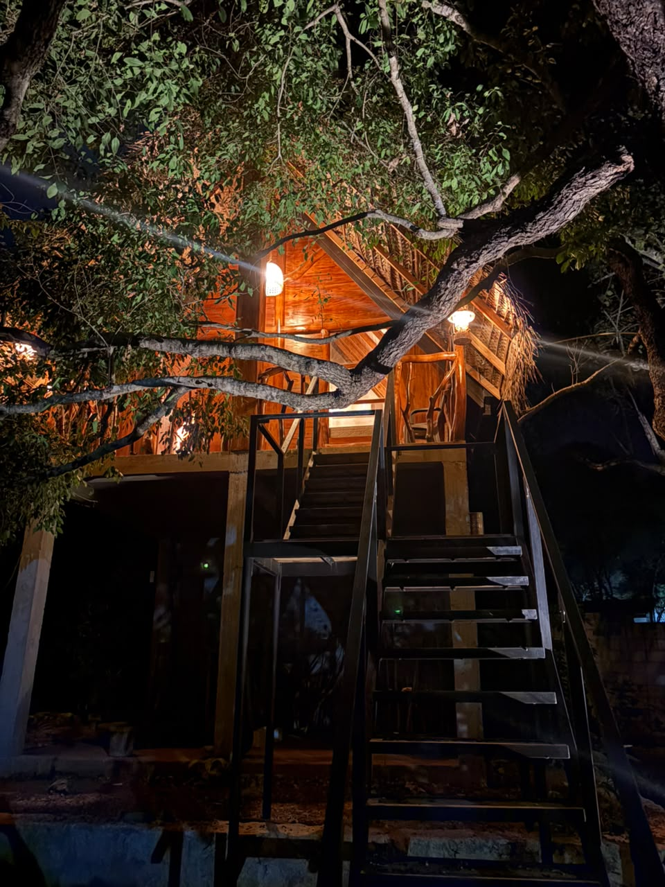
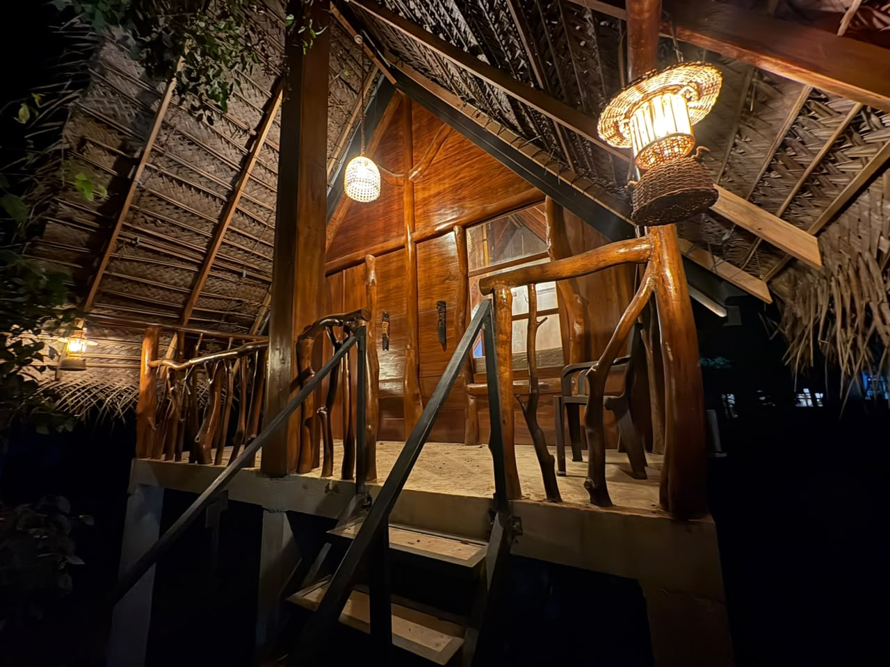
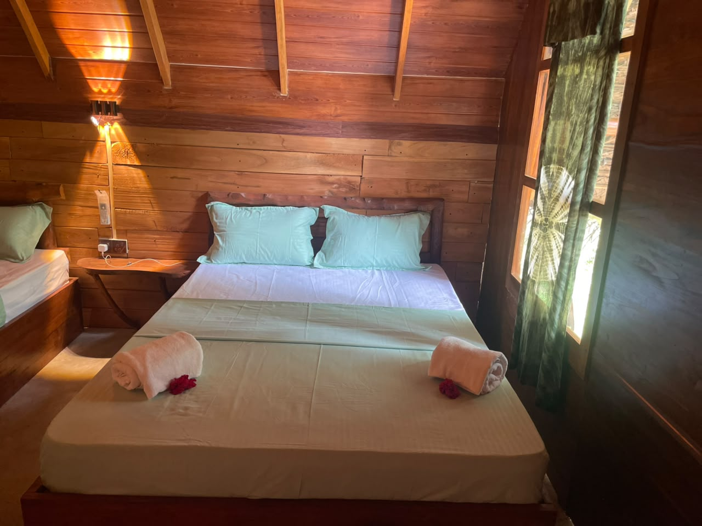
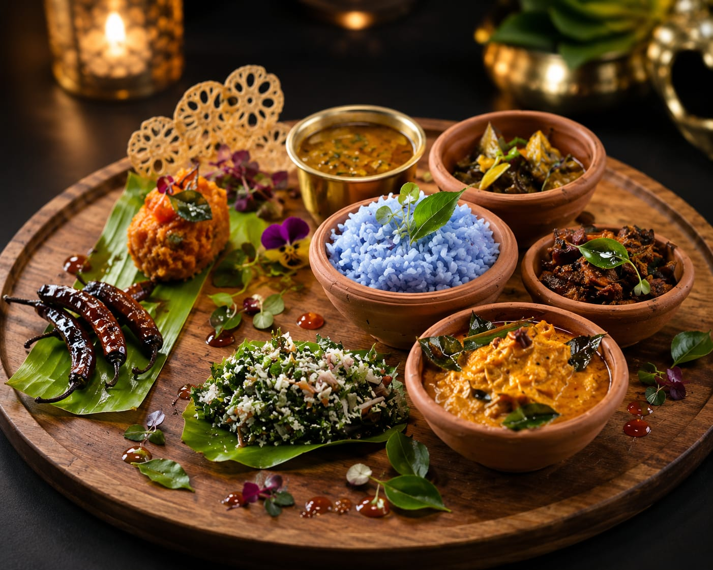
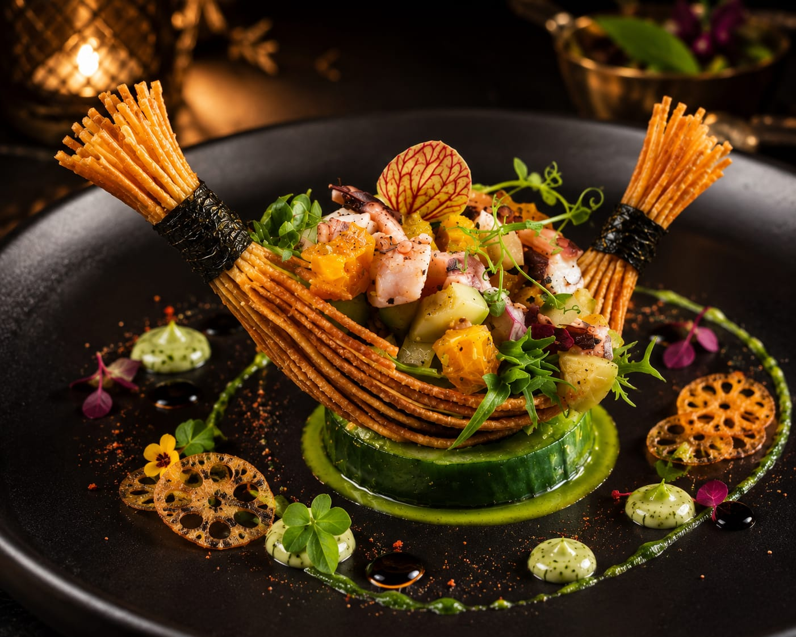
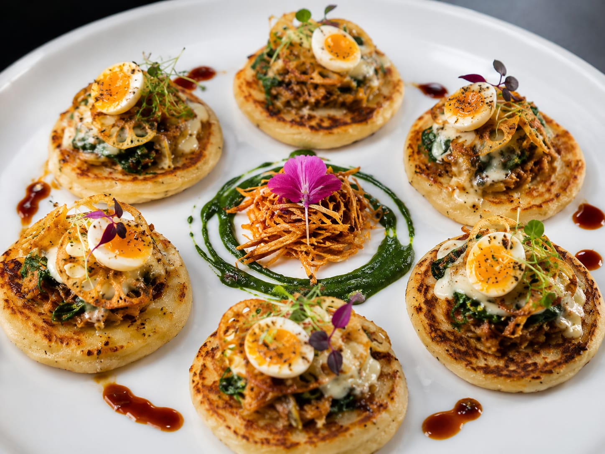

Ancient capital
Sigiriya Rock Fortress
Climb the 5th-century Lion Rock, see the water gardens and lion paws, and look across the forest plains from the palace summit.
Habarana · Sri Lanka
A timber tree house built into a living tree, village food cooked in front of you, and the quiet of the forest all night long.
Rates and availability are confirmed directly on WhatsApp.
Only 1 tree house unit and 20 restaurant seats — early enquiries are recommended.
Welcome to The Tusker
The Tusker is a single timber tree house standing on hand-cut poles, with a woven palm roof and a wide open deck that looks straight into the canopy. Everything you see was shaped on site by local craftsmen.
Downstairs, our 20-seat restaurant serves village Sri Lankan cooking plated with real care — and if you would like, you cook it with us.
04
Guests, 2 double beds
20
Restaurant seats
05
Local tours arranged

Built into a living tree, not around it.
The Stay



Our only unit
A raised timber room with an open deck, branch railings and a palm-thatch roof. Sleeps four in two double beds, with the forest on every side.
Beds
2 double beds
Max guests
4 guests
Setting
Raised tree house
Deck
Private, canopy level
Tree house gallery
Real photos of the bedroom, the lantern-lit deck at night and the attached bathroom. Tap any photo to see it larger.
Packages
Every plan is priced for your dates and group size. Send us an enquiry and we confirm the rate on WhatsApp within the day.
Cookery Class
Live village cooking class with our chef, then eat what you made.
Rate on WhatsApp
RequestThe Restaurant
Twenty seats, one kitchen, and cooking that comes straight out of the village: butterfly-pea rice, jackfruit, coconut sambol, curry leaf and clay-pot spice. Our chef plates every dish by hand.



Cookery class moments
Real moments from the village kitchen, kept in a clean gallery so the restaurant section stays easy to scan.
Please share meal requests before arrival — everything is cooked to order for the guests we have that day.
Reserve a tableExperiences
Tell us what kind of day you want and we help arrange the route, local guide, jeep, bicycles or boat. Start times are planned around heat, light and current access rules.
Ancient capital
Climb the 5th-century Lion Rock, see the water gardens and lion paws, and look across the forest plains from the palace summit.

Forest monastery
A quiet journey to Ritigala's ancient Buddhist forest-monastery landscape, arranged with respect for protected-area rules.

Elephant country
A 4WD safari through dry-zone forest and grassland near Habarana, known for Asian elephant sightings in the right season.

Village route
Ride the flat back roads around Habarana past paddy fields, tanks, home gardens and small temples with a local route plan.

Water and birds
A gentle boat ride on the tank, best in the soft morning or evening light when birds move along the banks.
Hands-on food
Grind the spices, cook on a clay hearth and sit down to the meal you helped make in the village restaurant.
Tour times, entrance tickets and transport costs can change by season. Message us with your dates so we can recommend the cleanest route for your group.
Ask for a tour planHurulu Tank Boat Visit
Short phone videos from the quiet tank visit: calm water, birds and a local boat ride near Habarana.
Getting here
Full arrival directions and a pin are sent with your booking confirmation. Ask us about a tuk-tuk or airport transfer when you enquire.
Open in Google MapsGood to know
Before you book
Travellers usually compare comfort, food, location and policies before booking direct. These are the essentials at The Tusker.
Private tree house
One raised timber unit with two double beds, canopy deck and space for up to four guests.
Village restaurant
Twenty seats, cooked-to-order Sri Lankan meals and live cookery class options.
Easy local trips
Ask for Sigiriya, Ritigala, Hurulu Eco Park, bicycle routes and Hurulu tank boat tours.
Send your details through WhatsApp. The team confirms availability, rate and arrival directions directly.
Yes. Share meal requests and preferred experiences before arrival so the kitchen and local guides can prepare.
The tree house works best for couples, families and small groups of up to four staying together.
Contact
Send your dates, the number of guests and what you would like to do — we reply with the rate and hold the tree house for you.
Message on WhatsAppWhatsApp / Phone
{{ phoneDisplay }}
{{ email }}
Where we are
{{ locationLine }}